<!DOCTYPE html>
<html>

<head>
    <title>Multiples</title>
    <!-- Set the viewport -->
    <meta name="viewport" content="width=device-width, initial-scale=1.0">
    <!-- Link CSS stylesheet -->
    <link rel="stylesheet" href="../Project3/main.css" />
    <script type="text/javascript" src="../Project3/script.js" defer></script>
    <link href="https://fonts.googleapis.com/css?family=Lora&display=swap" rel="stylesheet">
    <link href="https://fonts.googleapis.com/css?family=Yellowtail&display=swap" rel="stylesheet">


</head>

<body>
    <!-- show by default -->
    <div id="desktop">

        <figure>
            
        </figure>
        <div class="circle" id="c"></div>


        <figure>
            
        </figure>
        <p id="date">
            July 6 - December 1, 2019
        </p>
        <div id="page">
            <figure>
                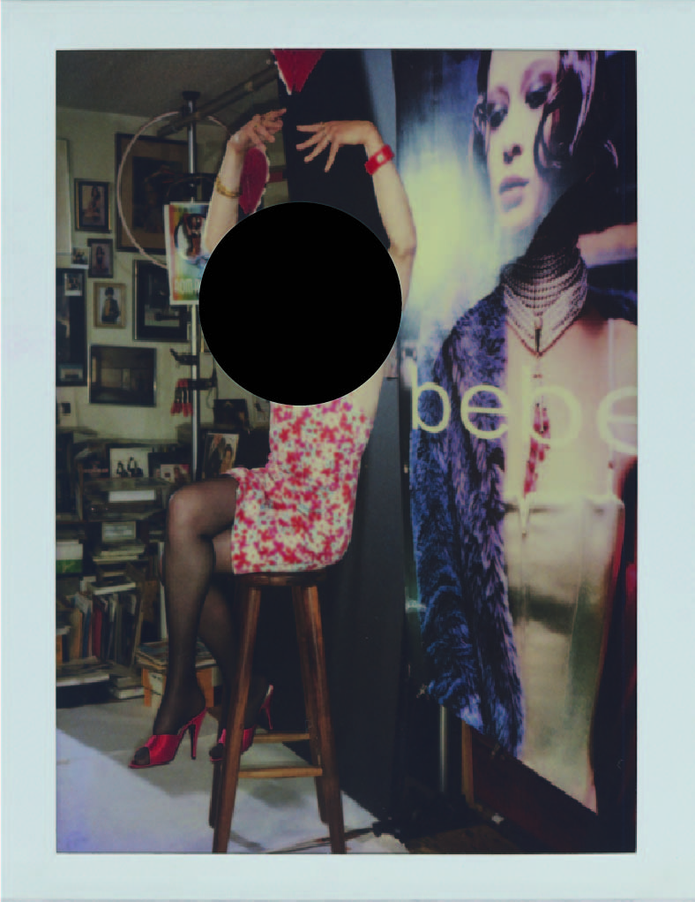
            </figure>
            <div class="mask">
                <div id="b"></div>
                <div id="s"></div>
                <div class="circle" id="cone"> </div>
            </div>
            <p id="in">
                April Dawn Alison didn’t achieve recognition as a photographer in her own lifetime. No exhibitions; no
                books; no interviews. Before she died in 2008, no one – not even her family – knew that April had taken
                over 9,000 self-portraits, spanning more than three decades. They didn’t know because April lived in
                the world as a man called Alan Schaefer. Hence, all the polaroid photo in here are pieces of April Dawn
                Alison’s personal little moments. I want people who view this photo is someone who truly will respect
                and understand her. Who can be patient enough to give themselves time and try their best to enjoy April
                Dawn Alison’s beauty. I block out the face by a circle mark, so you can enjoy her beautiful body shape
                at first. If you wish to see more, please go explore the answer, give the work some time and hope you
                enjoy the pretty of April Dawn Alison as I do.
            </p>
        </div>

        <div id="page-1">

            <figure>
                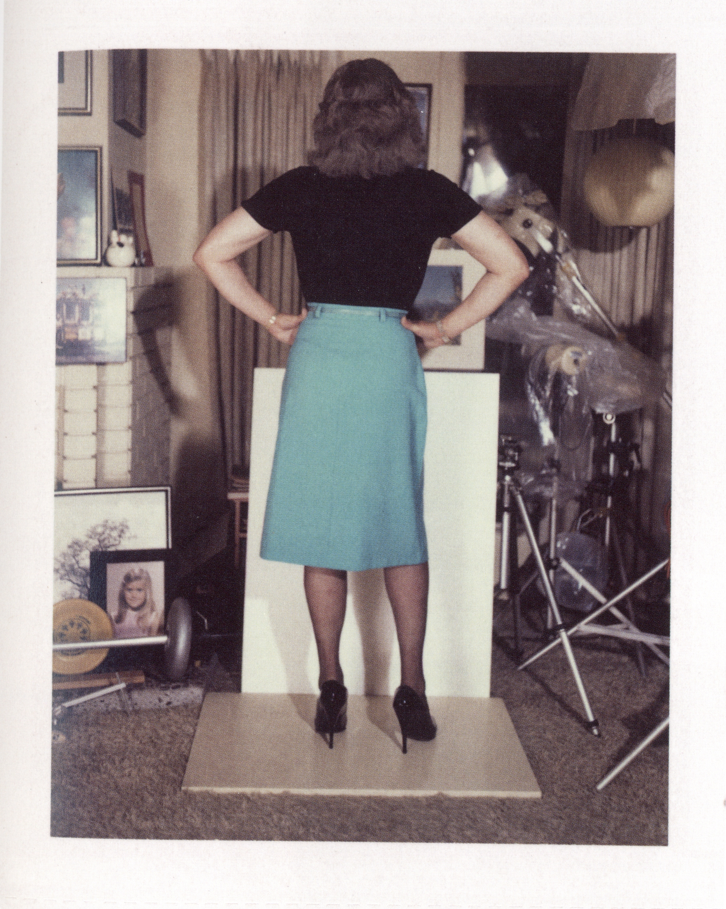
            </figure>
            <div class="mask">
                <div id="b-1"></div>
                <div id="s-1"></div>
                <div class="circle" id="cthree"> </div>
            </div>
            <figure>
                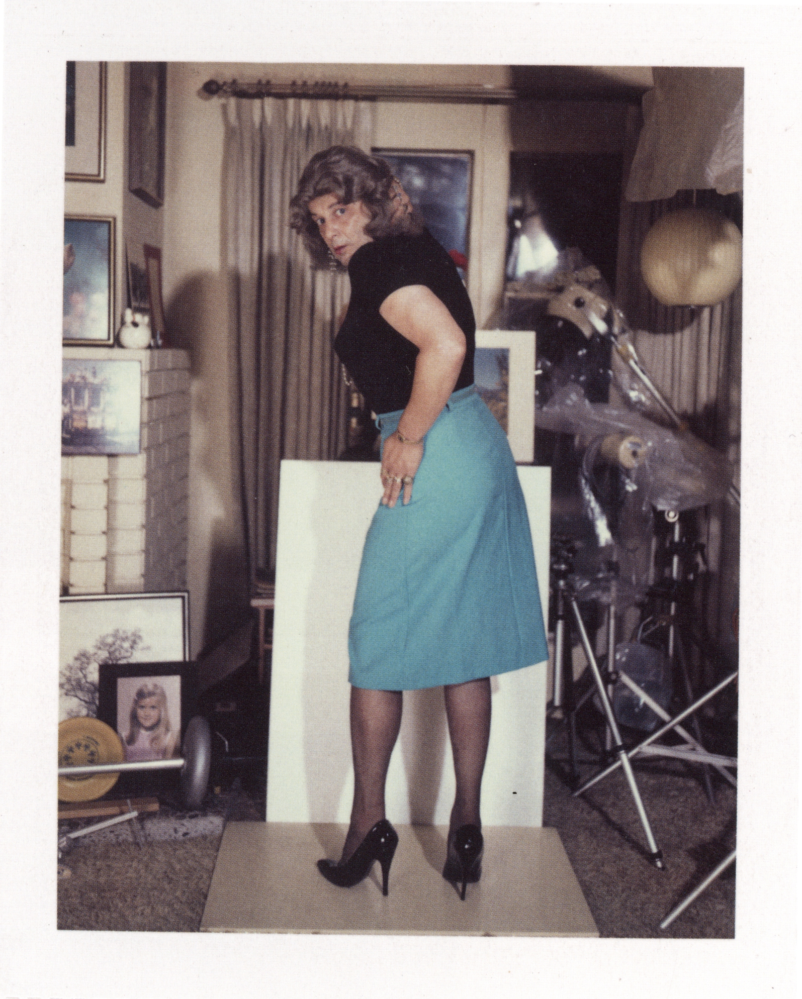
            </figure>
            <div class="mask">
                <div id="b-2"></div>
                <div id="s-2"></div>
                <div class="circle" id="ctwo"></div>
            </div>


        </div>

        <div id="page-2">

            <figure>
                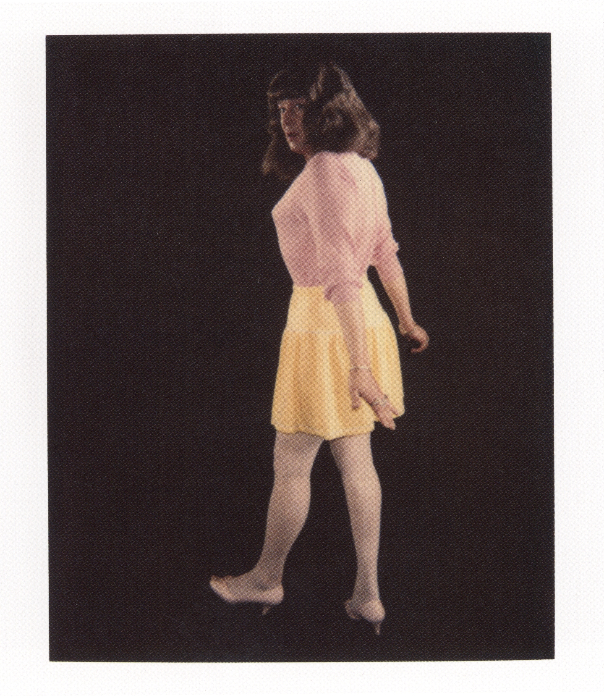
            </figure>
            <figure>
                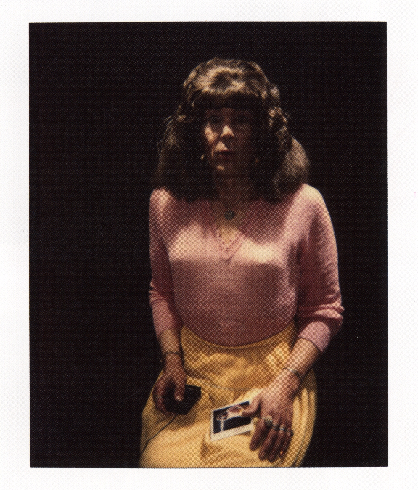
            </figure>
            <figure>
                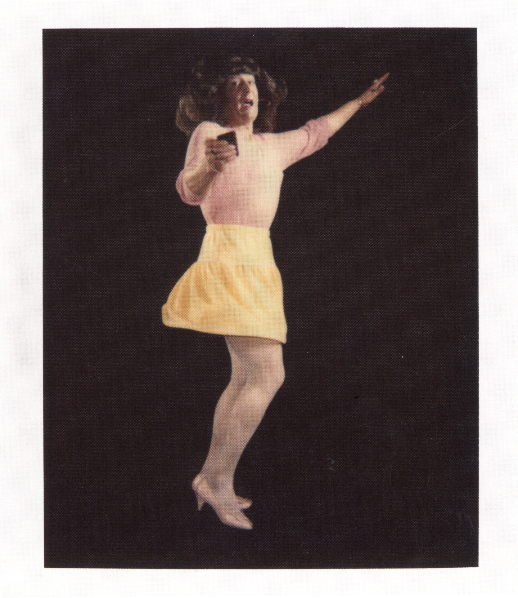
            </figure>

            <p id="intro">
                This exhibition draws from a trove of approximately 9,200 Polaroids by April Dawn Alison, the private
                persona of an Oakland-based commercial photographer known to family, friends, and neighbors as Alan
                Schaefer (1941 - 2008).
            </p>
            <p id="intro1">
                The photographs were made over the course of more than thirty years, and discovered upon the artist’s
                death. These extraordinary pictures — virtually all of them self-portraits — explore a wide range of
                feminine archetypes drawn from advertising, motion pictures, and fetish and pornographic imagery,
                revealing a rich inner life filled with as much humor as pathos, as much joy as loneliness.
            </p>
            <div class="mask">
                <div id="s-3"></div>
                <div class="circle" id="cfour"></div>

                <div id="s-4"></div>
                <div class="circle" id="cfive"> </div>

                <div id="s-5"></div>
                <div class="circle" id="csix"> </div>
            </div>

        </div>

        <div id="page-3">

            <figure>
                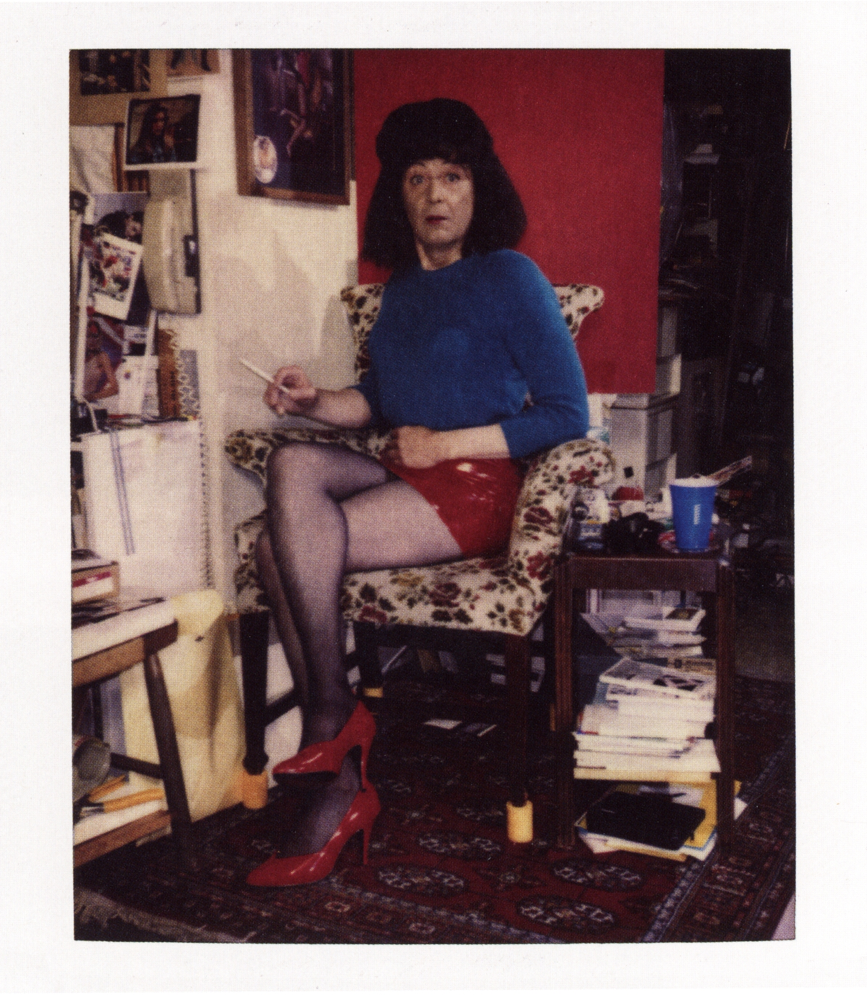
            </figure>

            <div class="mask">
                <div id="s-6"></div>
                <div class="circle" id="cseven"></div>
            </div>


        </div>

        <div id="page-4">

            <figure>
                
            </figure>
            <figure>
                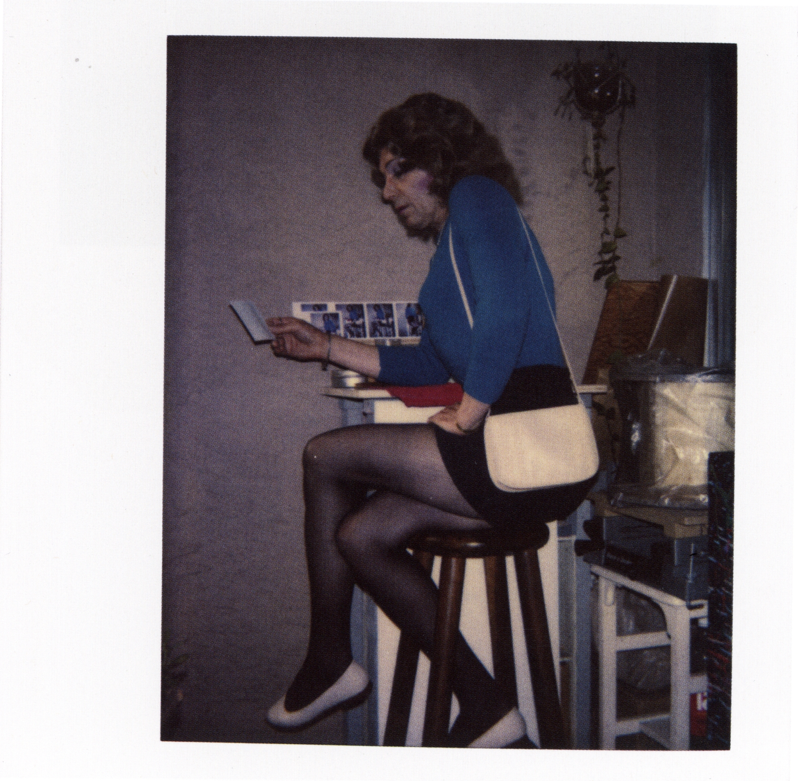
            </figure>
            <figure>
                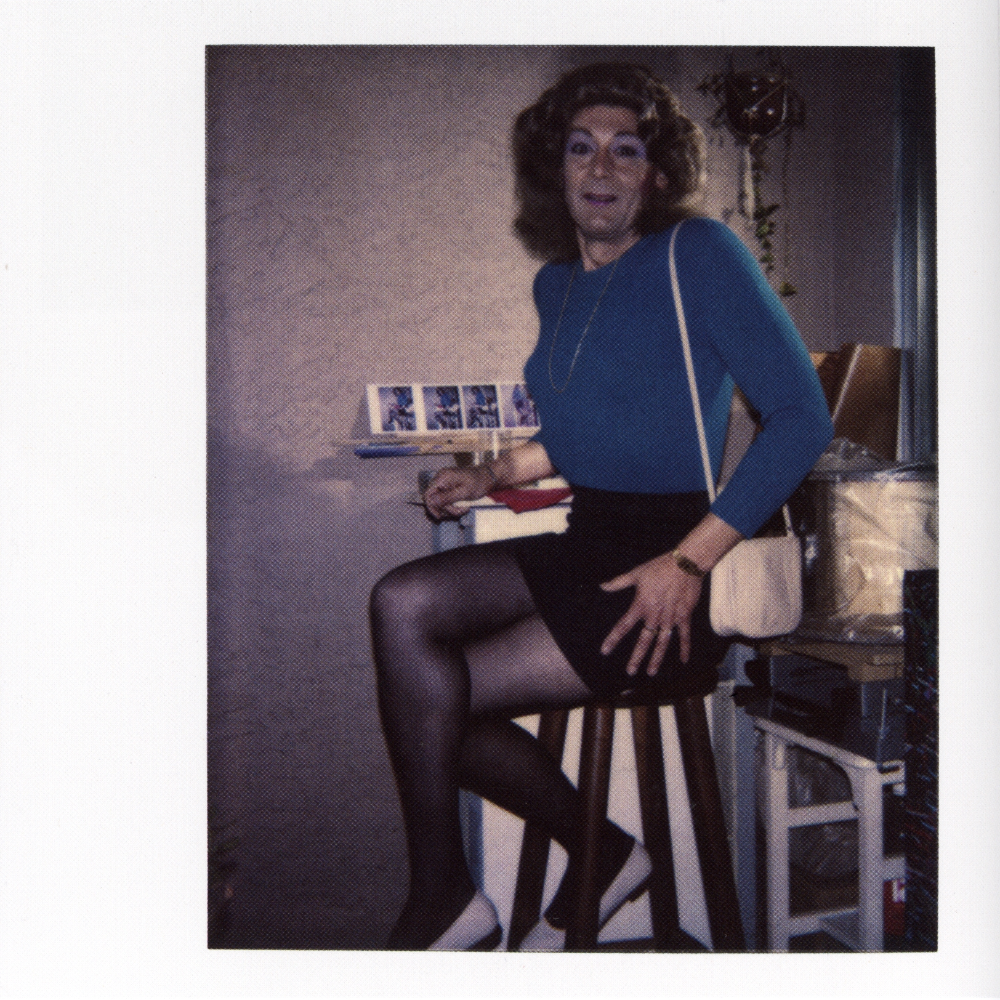
            </figure>
            <figure>
                
            </figure>

            <div class="mask">
                <div id="s-7"></div>
                <div class="circle" id="ceight"></div>

                <div id="s-8"></div>
                <div class="circle" id="cnine"></div>

                <div id="s-9"></div>
                <div class="circle" id="cten"></div>

                <div id="s-10"></div>
                <div class="circle" id="celeven"></div>
            </div>
        </div>

        <div id="page-5">
            <div id="back"></div>
            <figure>
                
            </figure>
            <figure>
                
            </figure>

            <div class="mask">
                <div id="s-11"></div>
                <div class="circle" id="c_12"></div>
                <div class="circle" id="c_13"></div>
                <div class="circle" id="c_14"></div>
                <div class="circle" id="c_21"></div>
                <div class="circle" id="c_22"></div>
                <div class="circle" id="c_23"></div>
                <div class="circle" id="c_24"></div>
                <div class="circle" id="c_25"></div>
                <div class="circle" id="c_26"></div>
            </div>
            <div class="mask">
                <div id="s-12"></div>
                <div class="circle" id="c_15"></div>
                <div class="circle" id="c_16"></div>
                <div class="circle" id="c_17"></div>
                <div class="circle" id="c_18"></div>
                <div class="circle" id="c_19"></div>
                <div class="circle" id="c_20"></div>
                <div class="circle" id="c_27"></div>
                <div class="circle" id="c_28"></div>
                <div class="circle" id="c_29"></div>
            </div>
        </div>

        <div id="page-6">

            <figure>
                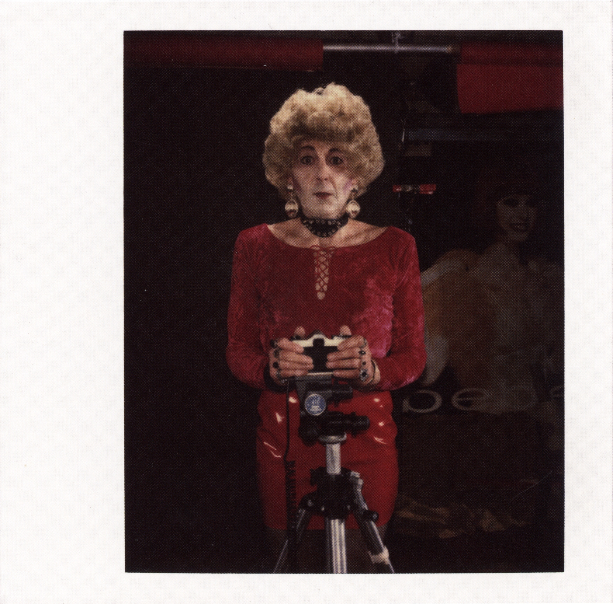
            </figure>
            <div class="mask">
                <div id="s-13"></div>
                <div class="circle" id="c_30"></div>
            </div>

        </div>

    </div>
    <div id="page-7">
        <ul>
            <li><a href="../Project3/mobile.html" id="i"> Things Behind the Black Mark…</a></li>
        </ul>
        <figure>
            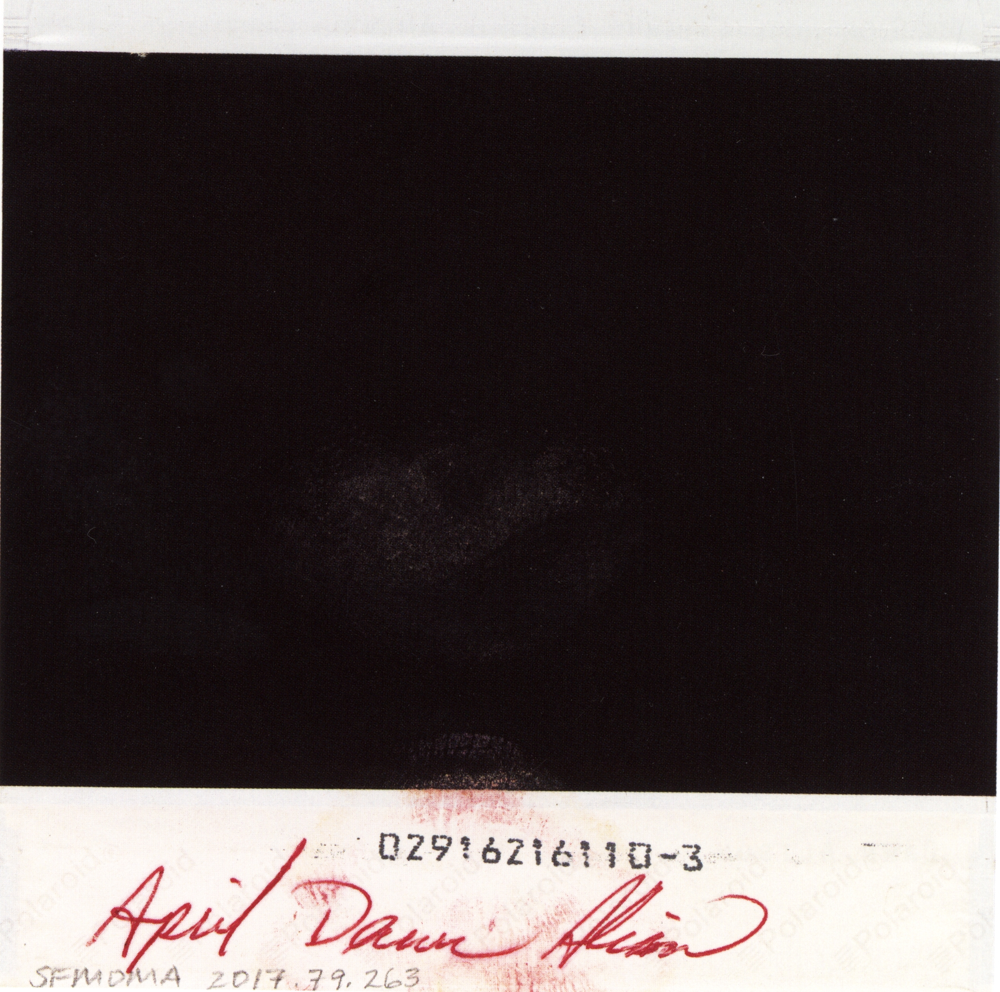
        </figure>


        <div class="mask">
            <div id="s-14"></div>
            <div class="circle" id="c_31"></div>
        </div>

    </div>

    </div>

    <div id="mobile">

    </div>

</body>

</html>